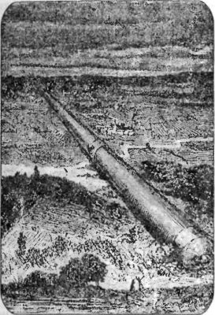
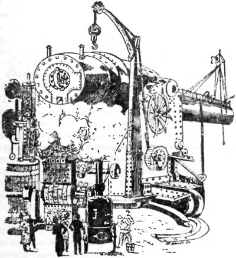
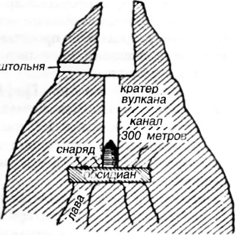

Из пушки — на Луну
Мы привыкли думать, что космическая эра в истории человечества началась 4 октября 1957 года — в тот день, когда на орбиту был запущен первый советский ИСЗ (искусственный спутник Земли). Однако это не совсем так. С середины XX по первую половину XX века в научной и научно-популярной печати весьма активно обсуждались проекты космических кораблей для межпланетных перелетов. Именно тогда прогремели имена Константина Эдуардовича Циолковского и Германа Гансвиндта — тех, кого «отцы» космонавтики, Сергей Королев и Вернер фон Браун, называли своими учителями.
Среди космических проектов докосмической эры встречались как совершенно фантастические, так и вполне обоснованные с научной точки зрения. Даже сегодня многие из них вызывают интерес — хотя бы как иллюстрация к тем идеям, которые волновали наших дедушек и бабушек. А начнем мы с космической артиллерии.
В 1865 году во Франции был издан очередной роман популярного прозаика Жюля Верна «С Земли на Луну прямым путем за 97 часов 20 минут». В этом романе писатель представил вниманию европейского читателя проект экспедиции на Луну в специальном снаряде, выпущенном из гигантской пушки.
Любопытно, что Жюль Берн был не одинок в своем желании поразить публику свежими идеями, которые возникали в связи с темой межпланетных путешествий. В том же году Александр Дюма опубликовал роман «Путешествие на Луну», а Анри де Парвиль выпустил книгу «Житель с планеты Марс». Помимо того появилось много книг анонимных авторов: «Поездка на Луну» — во Франции и «История путешествия на Луну» — в Англии. Нельзя сказать, что все эти авторы слепо подражали Верну. Например, Дюма ввел понятие минус-материи — «вещества, имеющего свойство быть отталкиваемым Землей», а Ахил Эро, автор безыскусной книжонки «Путешествие на Венеру», придумал космический корабль с водяным реактивным двигателем.
Однако в истории литературы сохранился лишь роман Жюля Верна. Более того, он породил своеобразную субкультуру, долгие годы подпитывавшую энтузиазм людей, посвятивших себя мечте о небе.
На самом же деле знаменитый фантаст взял за основу идею, предложенную еще Исааком Ньютоном в монографии «Математические начала натуральной философии» (1687). Эта работа заложила теоретические основы современной механики и баллистической космонавтики. Ньютон поставил следующий мысленный эксперимент. Представьте себе, писал он, высочайшую гору, пик которой находится за пределами атмосферы. Вообразите пушку, установленную на самой ее вершине и стреляющую горизонтально. Чем мощнее заряд используется при выстреле, тем дальше от горы будет улетать снаряд. Наконец при достижении некоторой мощности заряда снаряд разовьет такую скорость, что не упадет на землю вообще, выйдя на орбиту. Эта скорость ныне называется «первой космической» и для Земли она равняется 7,91 км/с.
Очень похожими словами аргументировал свою позицию и персонаж Жюля Верна — Дж. Т. Мастон, когда отстаивал проект колоссального орудия для обстрела Луны перед членами вымышленного «Пушечного клуба». Развив недюжинную энергию, эти выдающиеся господа сумели за несколько лет построить такую пушку и запустить снаряд к Луне.
Описанное в романе орудие весило 68 тысяч тонн, длина его составляла 274 метра, диаметр — 2,7 метра, толщина стенок — 1,8 метра. Изготовлено оно было из серого чугуна. В качестве взрывчатого вещества использовался пироксилин в количестве 164 тысяч килограммов.
Сначала предполагалось послать к Луне снаряд без пассажиров, но потом, по предложению француза Мишеля Ардана, внутри необыкновенного ядра была устроена каюта, в которой и решились отправиться в космическое путешествие трое смельчаков: сам Ардан, председатель клуба Импи Барбикен и капитан Николь.
Место расположения пушки было выбрано во Флориде около города Тампа-Таун на горе Стонсгилль (27°7? с.ш., 5°7? за).
Лафет орудия вызвал отчаянные дебаты в «Пушечном клубе». Мастон предлагал уложить ее на землю, доведя общую длину ствола до 800 метров. Однако восторжествовало мнение председателя Барбикена, который предложил установить пушку («колумбиаду») вертикально внутри подходящей горы.
Снаряд имел «гранатообразную» форму с наружным диаметром в 2,743 метра и высотой 3,658 метра. Для смягчения динамического удара при выстреле на дне ядра была налита вода, поверх которой наложили деревянный круг, плотно прилегающий к стенкам. Кроме того, вода разделялась двумя более тонкими кругами, которые при выстреле последовательно проламывались; при этом вода устремлялась через трубку, проложенную внутри стенок ядра к его вершине, выливаясь наружу.
Вес снаряда — около 8 тонн, а воды — 5700 килограммов. Сам снаряд был отлит из алюминия с толщиной стенок в 30 сантиметров. Для входа в ядро был проделан люк, для наблюдения за окружающим пространством — четыре окна. Внутри стенки были обшиты кожей, закрепленной на гибких пружинах.
Старт состоялся 1 декабря 186… года (автор намеренно не называет точную дату), и выглядело это так:
«Раздался ужасный, неслыханный, невероятный взрыв! Невозможно передать его силу — он покрыл бы самый оглушительный гром и даже грохот извержения вулкана. Из недр земли взвился гигантский сноп огня, точно из кратера вулкана. Земля содрогнулась, и вряд ли кому из зрителей удалось в это мгновение усмотреть снаряд, победоносно прорезавший воздух в вихре дыма и огня. <… >
Когда из колумбиады вместе со снарядом вырвался чудовищный сноп пламени, он осветил всю Флориду, а в Стонзхиллской степи, на огромном расстоянии, ночь на мгновение сменилась ярким днем. Гигантский огненный столб видели в Атлантическом океане и в Мексиканском заливе на расстоянии более ста миль. Многие капитаны судов занесли в свои путевые журналы появление необычайных размеров метеора.
Выстрел колумбиады сопровождался настоящим землетрясением. Флориду встряхнуло до самых недр. Пироксилиновые газы, вырвавшись из жерла гигантской пушки, с необычайной силой сотрясли нижние слои атмосферы, и этот искусственный ураган пронесся над Землей с быстротой, во много раз превышавшей скорость самого яростного циклона.
Ни один зритель не удержался на ногах: мужчины, женщины, дети — все повалились наземь, как колосья, подкошенные бурей. Произошла невообразимая суматоха; многие получили серьезные ушибы. <…> Триста тысяч человек на несколько минут совершенно оглохли, и на них словно напал столбняк».
Через два года после публикации «С Земли на Луну…» появился роман «Вокруг Луны» — история трех смельчаков, заключенных в алюминиевой оболочке снаряда, который несет их сквозь космос. Вместо четырех расчетных суток ядро пробыло в пути гораздо дольше. Оно облетело вокруг Луны и наконец, оказавшись в поле земного тяготения, вошло в атмосферу и благополучно «приземлилось» в океане.
Впоследствии идеи Жюля Верна неоднократно обсуждались учеными и инженерами. Еще в XX веке было показано, что проект этот неосуществим по целому ряду причин. Главнейшей из них называют перегрузки, которые убили бы всех пассажиров, находящихся внутри снаряда. Однако даже если бы однократного чудовищного ускорения удалось избежать путем равномерного размещения зарядов взрывчатого вещества по длине канала пушки, сопротивление воздуха не позволило бы вытолкнуть снаряд из ее жерла с первой космической скоростью, необходимой для преодоления сил притяжения Земли.
Полемика вокруг знаменитого романа породила несколько новых проектов «лунных» пушек. Один из них приведен в романе французских фантастов Жана Ле Фора и Анри Граффиньи «Необыкновенные приключения русского ученого» опубликованном в 1895 году.
В этом романе авторы описывают, как двое ученых отправились на Луну в снаряде, который был выброшен силою взрыва из пушки, устроенной вертикально в земле.
Стальное орудие длиной 80 метров и весом в 600 тонн планировалось разместить в вертикальной шахте. Внутри канала имелось 12 камер, наполненных «селенитом» (гипотетическим сверхмощным взрывчатым веществом). Все зарядные камеры должны быть соединены электрическими запалами, которые после взрыва нижнего запала автоматически производят последовательные взрывы боковых, обеспечивая приемлемое ускорение. В каждую из камер помещается полтонны селенита. У основания же закладывается целая тонна. Между зарядом и дном снаряда оставляется пространство в 50 сантиметров. Высота снаряда — 3,5 метра, а диаметр — 2 метра.

Место выстрела было выбрано в южном полушарии, на острове Мальпело, принадлежащем Колумбии.
В момент выстрела снаряд был выброшен к Луне. Сотрясение и перегрузку пассажиры перенесли благополучно. При падении на Луну рессоры и матрацы оказались способными смягчить силу удара, и путешественники остались живы.
Помимо вышеописанной пушки, авторы приводят рисунок другой — обычного типа, но громадных размеров, при помощи которой также можно было бы забросить снаряд на Луну.
Как мы видим, оба этих проекта являются лишь вариантами «колумбиады» и пушки Мастона. Но в романе имеется и третий, более оригинальный, проект.
Третий снаряд для путешествия на Луну был помещен в кратер американского вулкана Котопахи. Он был изготовлен из никелевой магнезии, которая весит в два раза легче алюминия и обладает большой прочностью. Общий вес снаряда — 600 килограммов. Он сборный и состоит из отдельных частей, приспособленных для перевозки на большие расстояния.
Для освещения внутренней каюты снаряда используется электрическая батарея с зарядом на 240 часов. Отопление производилось горением спирта. Для возобновления дыхательной среды был взят кислород, сгущенный до твердого тела в виде таблеток. Для удаления углекислого газа применялся едкий поташ.
Далее авторы описывают межпланетный полет в этом снаряде, который силой извержения вулкана был выброшен в межпланетное пространство. По данным авторов, скорость извержения вулкана Котопахи составляет 3–4 км/с. Будущие межпланетчики обнаружили в его кратере вертикальный канал глубиною 300 метров, упиравшийся в пласт обсидиана. При помощи специальных машин стенки канала были сглажены, а в основание его, диаметром 10 метров, опустили «лунный» снаряд. Поскольку снаряд был немного уже, то между ним и дном канала был положен кессон со сжатым воздухом, точно закрывавший сечение канала.
Когда все приготовления были закончены, а Земля и Луна находились в благоприятном расположении (25 марта, 18 часов 10 минут), пятеро путешественников расположились внутри снаряда. Еще раньше чувствительные сейсмографы указали на приближение извержения, но его искусственно ускорили взрывом обсидиановой плиты под снарядом.


Перед тем все пассажиры завернулись в матрацы. Когда пилот нажал кнопку, произошел страшный толчок, и все потеряли сознание. Между тем снаряд, вытолкнутый из жерла воздействием раскаленных подземных газов, на скорости 11 км/с преодолел земную атмосферу и оказался в межпланетном пространстве. Некоторое время спустя все путешественники пришли в чувство и благополучно пролетели к Луне.
Спуск на Луну по Фору и Граффиньи выглядел следующим образом. Хотя скорость падения будет равна 2500 м/с, однако благодаря «разреженности лунной атмосферы» снаряд при трении об нее не раскалится; в днище же его были встроены сильные пружины и рессоры, которые ослабят силу удара. Перед моментом прилунения космические путешественники снова завернулись в матрацы. И вот наконец… «ужасный толчок потряс весь вагон; люстра и лампы разбились на тысячи кусков, мебель, сорвавшись с мест, нагромоздилась в одну кучу». Впрочем, никто из путешественников при этом не пострадал.